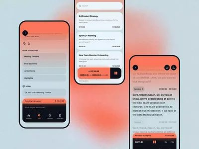

AI Meeting Assistant Mobile App
by Zajno
AI · 移动AppAI · Mobile App
会议总结到行动项的单手操作流，可抄信息层级和深色渐变的焦点设计。One-handed flow from meeting summary to action items — steal the information hierarchy and the dark-gradient focus design.
本期 6 个作品。6 works in this edition.